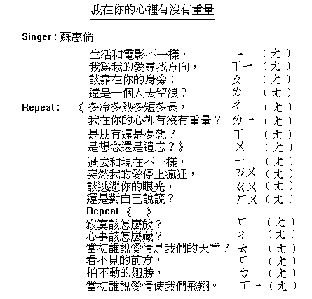
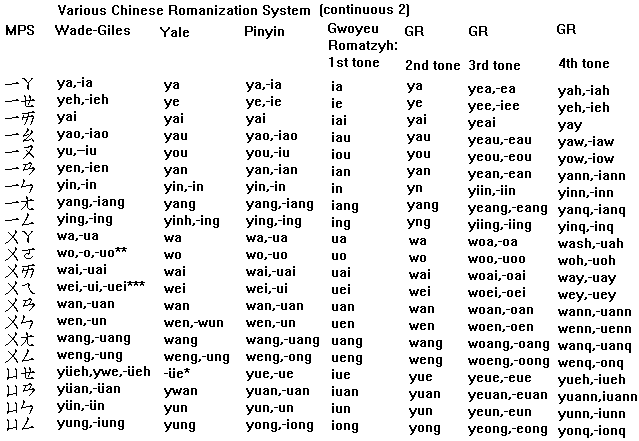
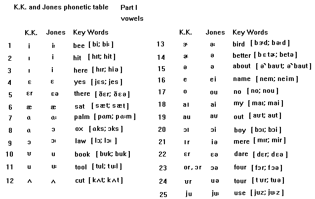
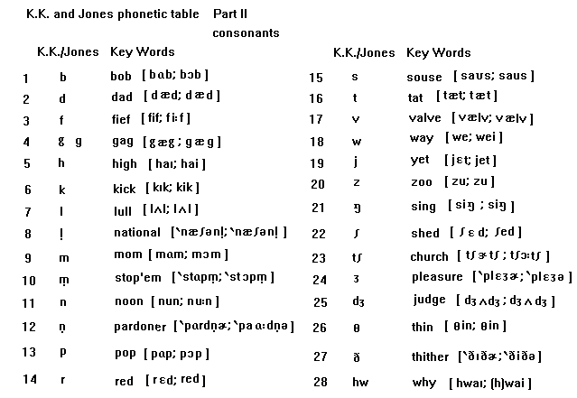
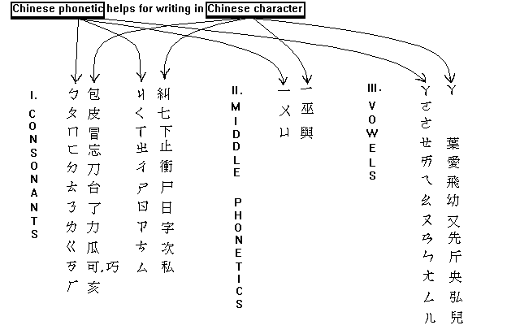
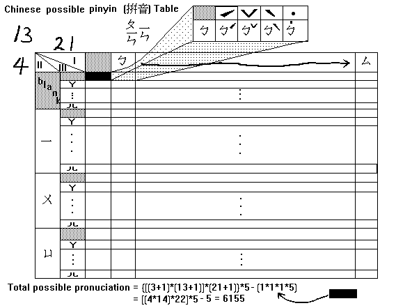
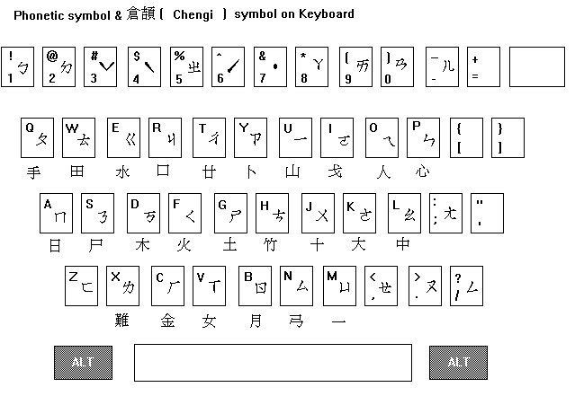
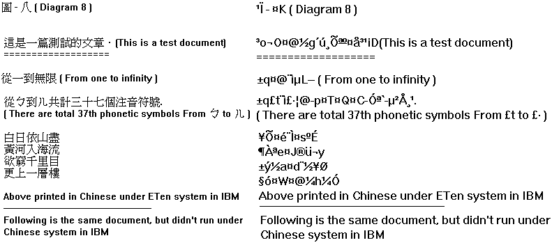
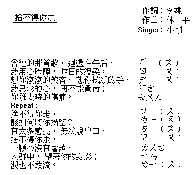
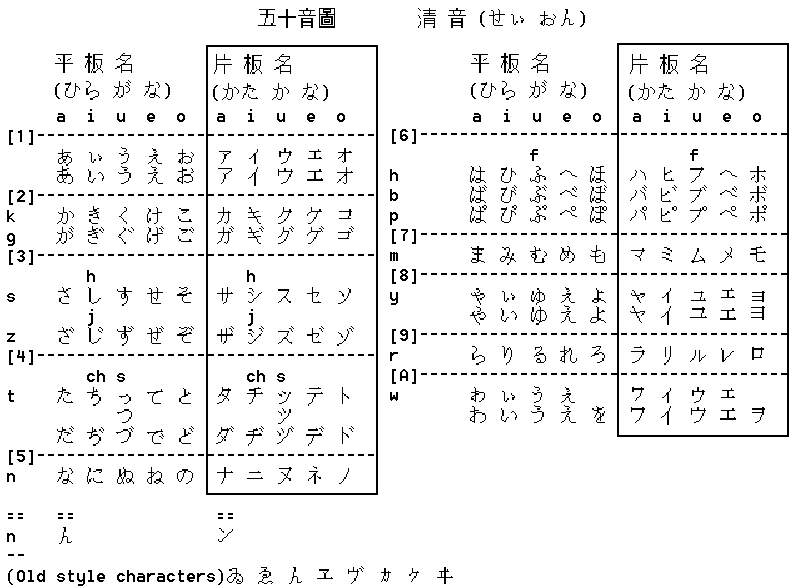

Diagram 2-1
Diagram 2-1 Society 340-01
Professor Dr. Lin
November,29 1993
OUTLINE
II. The history of Chinese written language
A. Early written
B. Calligraphy written
C. Recently written
III. The history of Chinese pronunciation
A. Source of pronunciation
B. Development of pronunciation
A. Concept
B. Chinese language on computer
1. Written
2. Pronunciation
CHINESE LANGUAGE
There are many dialects spoken in China, such as Peking, Wu, Xiang, Gan, Min, Yue, and Ke-Jie (Hakka), but only one written language. Therefore, when two people speak in different dialects, they cannot communicate with each other. The only way they can communicate is to write down the words that they try to speak. However, using this way is too slow to express feeling. To avoid this situation, the best way is to unify the language. Therefore, everyone can understand each other in conversation. For the reason, the Peking dialect was voted by all of China's provinces in 1913 to become a standard national tongue (Official speech) language. As we know, Chinese had five thousand years' culture. The development of Chinese language was very interesting. We could analyze it by the writing and the pronunciation.
II. The history of Chinese written language
A. Early written
In 1899 oracle bone and tortoise shell inscriptions were found in Hsiaotun, Anyang, in Honan Province. Those inscriptions were around 1300 to 1028 BC. (Shang Dynasty). It was earliest Chinese character that had ever been found.
The next stage in development of Chinese writing was found in bronze inscriptions. According to the date of the bronze inscription, it could date back to the midShang dynasty. Those early Chinese characters are very simple. The Chinese lexicographer Hsu Shen, who compiled the Shuowen Etymological Dictionary in 121 AD., divided the Chinese characters into six types:
B. Calligraphy written
After paper was invented by Ts'ai Lun in 105 AD. ( Han Dynasty ), Chinese characters was developed into a lot of styles by calligraphy. As we know calligraphy is the art of brush writing. Therefore, it developed various Chinese characters styles :
C. Recently written
Now, in PRC (mainland China) people use simplified form of Chinese characters, because the Chinese character was reformed during 1949. In ROC (Taiwan) people still use original Chinese characters. Therefore, it exists a problem in the whole Chinese culture that there is "one country, two writing systems".
III. The history of Chinese pronunciation
A. Source of pronunciation
The sound system of Chinese has its history. The Chinese writing system is not based on the phonemic principle. But the phonetic system was developed in the Tang dynasty, because Buddhist text books, which were written in Indian characters, were as close as possible to the spoken language. Therefore, the Chinese discovered that it was good for development alongside the scholars' written language. At the same time, the Chinese also discovered that the Indian language was according to their phonetic characteristics, not according to the character representing them. The phonetic system is an early rhyme table classic collection in Shih Ching (trans. as The Book of Songs, 1927), dating from 1000 to 600 BC.
(Negel's encyclopedia-guid China p67).
B. Development of pronunciation
There was a Swedish scholar Bernhard Karlgren (1889-1978), who designed the method of investigating the early pronunciation of Chinese, and whose writings established the basic framework of its development. His method is to accept techniques of comparative linguistics and internal reconstruction (phonological patterns characterizing). At the mean time (the beginning of the 7th century AD.) Lu Fayen compiled the Ch'ieh yun. Rhyme dictionaries of this kind present a clear picture of the phonological patterning to be a standard dialect of Chinese in the period ending at about 600 AD. (see references 6, p340).
Later on, Wu Chihhui, a philosopher and one of the founders of the ROC (Taiwan), was chosen to direct the task of creating a truly national language based on the Peking dialect. He compiled a dictionary, based on Chinese characters and their standardized pronunciation, called the Kuoyin Chientzu for the 214 Chinese radicals in 1919. The sounds of Chinese have three main options:

Diagram 1There is another pronunciation system called romanization for national language. This is more complicated phonetic system. [see Diagram 2-1 and Diagram 2-2 (.GIF mode )]. Also it is similar to the K.K. Phonetic table in the U.S. and the Jones Phonetic table in British. [see Diagram 3-1 and Diagram 3-2 (.GIF mode )].

Diagram 2-2
Diagram 3-1
Diagram 3-2The pronunciation system in PRC (Mainland China) is called Hanyu p'inyin (Chinese Spelling(pinyin)) [see Diagram 4(.GIF mode)]. It was adopted by the PRC in 1958. Both phonetic systems have their features. But the MPS table ( using in ROC ) is more systemized. It helps not only for pronunciation, but also it could help for writing in Chinese character. [see Diagram 5(.GIF mode)]. My personal analysis of the MPS table is that it includes 6155 possible sounds that people can speak. [see Diagram 6(.GIF mode)]. This is good for doing research, for example, determining the rhyme of the song. [see Diagram song1(.GIF mode)].

Diagram 5
Diagram 6A. Concept
The Chinese computer is not different from the "English computer" (IBM or Macintosh computer etc.). It is different from software that could display Chinese characters in computer (IBM or Macintosh etc.). This kind of software is the ETen Chinese system, the 01 Chinese, or the Chinese Windows etc. Those software is a terminal emulator that can retrieve words from a Chinese character database(CODE). There are so many entry ways to input a Chinese character. For instance:

Diagram 7Every entry has its goal to improve the entry speed of Chinese characters. Now, there is a hope that the sound entry system is in development. If it is successful, it will become the quickest way of entry.
About the Chinese character database (CODE), there exist many versions:
1. BIG5 Code: used as the official standard in Taiwan.
3. HKbig5 code: developed in Hong Kong University.
4. SinoCode code: developed in German.
The problem is that there is not a standard database (CODE) in the world right now. People who understand Chinese cannot really exchange data directly by computer, because nobody can really be sure that a remote computer uses the same kind of Chinese character database (CODE) as a local computer, for example, if someone uses BIG5 to save his document, and then he/she brings this document to mainland China's Goabiao system to read, it won't be compatible. The English mode has the same problem [see Diagram 8(.GIF)].

Diagram 8Therefore, unless there exists a standard Chinese character database (CODE) for every computer to use, then the problem of the document that cannot communicate in each computer will disappear. Similarly, it is just like the Mandarin was voted to become the standard language in China, then everyone can communicate with each other directly. Now the hope is on the UniCode (16 bits). The Unicode, published by Addison Wesley in the fall of 1991, is called The Unicode Worldwide Character Set Standard, version 1.0, volume 1. The later version was Unicode 1.0.1 and 1.1. It is still being updated now until reaches its goal of encoding the characters needed to support the representation of all the written languages of the world, including those no longer written today. When the goal is reached, to communicate by computer could be easy in this whole new world. There won't exist the Chinese character which cannot show on the computer and which don't run under the display emulator. [see Diagram 8(.GIF mode)].
Language is always changing. For example, American English merely simplified the long vowels from British English. For instance, JEWELLER and FAVOURITE in British English changed to JEWELER and FAVORITE in American English. The Chinese language has the same situation in the simplified and the original character right now. You can see the change in written (simplified and original character) between PRC and ROC. Also, all kinds of problems have happened in the Chinese computer world. If you like to know or to discuss Chinese computers, you can use Email to subscribe to the CCNETL%UGA.BITNET@VM1.Nodak.EDU by sending the following message:
SUB CCNET-L your_full_name
The discussion group had already talked about the following:
1. The Japanese kana [see Diagram 9], which apparently inspired the invention of bo,po,mo,fo, were originally just simplifications of Chinese characters, used only for their sound, with the graphic meaning being entirely lost.
(Bartellett Thomas. Re: History of Bopomofo ? 3 June 1993.)
2. Bopomofo zhuyin zimu was the first legal spelling system.
(Xie Tianwei. Re: History of Bopomofo ? 3 June 1993.)
3. Big5 and GoaBiao have a compatibility problem.
The discussion group is the best place to know what is changing in the Chinese
language right now.
1. Adams Glenn A. Re: What are the Character Sets? Glenn@wheat-chex.ai.mit.edu, CCNET-L@uga.cc.uga.edu. 16 January 1993.
2. Bartellett Thomas. Re: History of Bopomofo ? Bartlett%HUSC.BITNET@uga.cc.uga.edu, CCNET-L@uga.cc.uga.edu. 3 June 1993.
3. Bin, Jang. Good song everyone singing. Sinorama Magazine, Vol. 16 No. 12 December 1991.
4. Destenay, Anne L. NAGEL'S Encyclopedia-Guide China. Geneva (Switzerland): Nagel Publishers, 1973.
5. Grolier Electronic publishing, Inc. The software toolworks illustrated encyclopedia (TM). Grolier Electronic publishing, Inc. 1991.
6. Hook, Brain. The Cambridge Encyclopedia of China. Melbourne Sydney: Cambridge University Press, 1982.
7. Leisher Mark. More B7 and G7 encoding info. Mleisher%NMSU.EDU@uga.cc.uga.edu, CCNET-L@uga.cc.uga.edu. 25 October 1990.
8. Liang Shih-chiu. Far East Mini English-Chinese Dictionary. Taipei: The Far East Book Co., May 1987, 2-3.
9. Ma, Chung-tien. One Country, Two Writing Systems? Sinorama Magazine, Vol. 18 No. 6 June 1993, 97-105.
10. Republic of China. Republic of China Yearbook 1991-92. Kwang Hwa publishing Company, 1991 37-45.
11. Shu, I-Ching. SAT II Chinese Language test. World Journal, 26 September 1993, American edition, S1, No. 497.
12. Summerfield, John. Fodor's China. New York: Fodor's Travel Publication, INC. 1992.
13. TOZAKI Hidekazu. Re: Chinese-Japanese Kanji. Tozaki@math.keio.ac.jp,
CCNET-L@uga.cc.uga.edu. 21 November 1991.
14. Wei, Hung-chin. Computers That Deserve a Good Talking To. Sinorama Magazine, Vol. 18 No. 4 April 1993, 44-48.
15. Wei, Hung-chin. The Computer and Culture - Computer Whiz Chu Bong Foo. Sinorama Magazine, Vol. 17 No. 4 April 1992, 43-47.
16. Whang, I. Chinese Character has a kind of construction beauty. Central Daily News, 13 November 1993, S3.
17. Xie Tianwei. Re: History of Bopomofo ? Twxie@UCDAVIS.EDU,
CCNET-L@uga.cc.uga.edu. 3 June 1993.
ASCII American Standard Code for Information Interchange. pronounced "AS key"
Chinese language means Mandarin in English, p'ut'unghua on mainland China, and kuoyu in Taiwan.
ETen is a trademark of the ETen Information System Co., Ltd.
IBM is registered trademarks of International Business Machines Corporation.
Macintosh is registered trademarks of Apple Computer, Inc.
Open FTP anonymous files to ftp.ifcss.org to get the chcoding file in directory:
/china-studies/compute/ccnet-archive
FTP cnd.org has same source as ifcss.org.
Li-Hung Chen's WWW page: https://www.charlih.com
Email: charlih_chen@yahoo.com
Last undated : 3/31/1995 (12/04/2000)

Diagram song250 basic Japanese phonetic characters:

Diagram 9 Diagram 4
Diagram 4